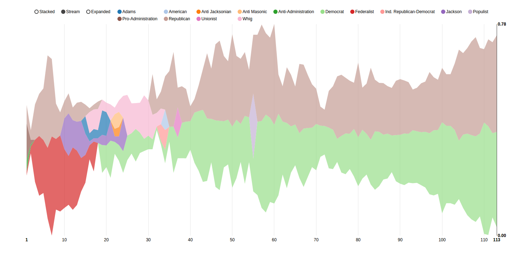
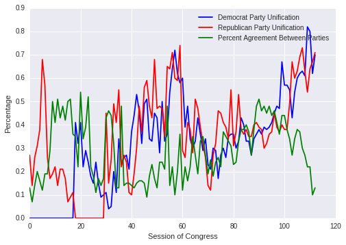
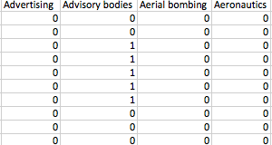
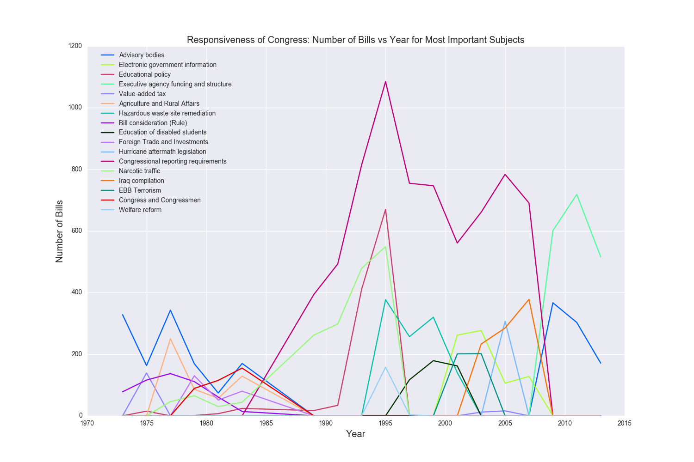
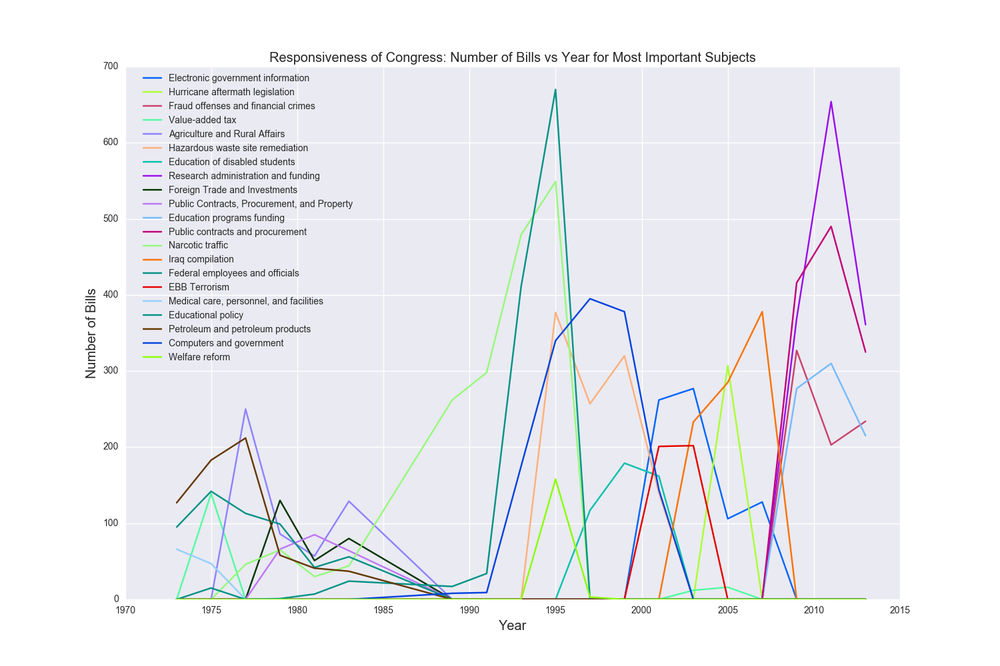
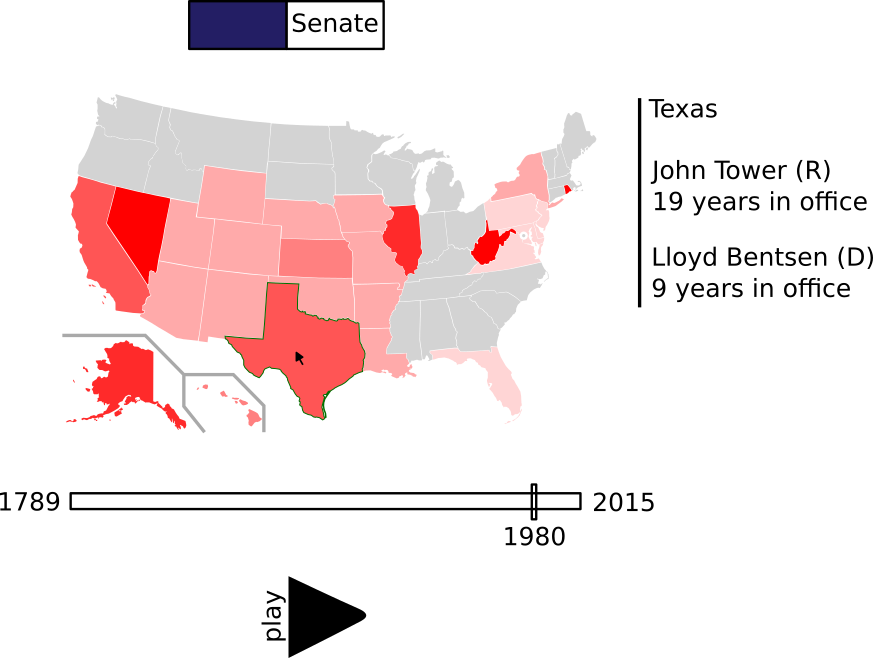
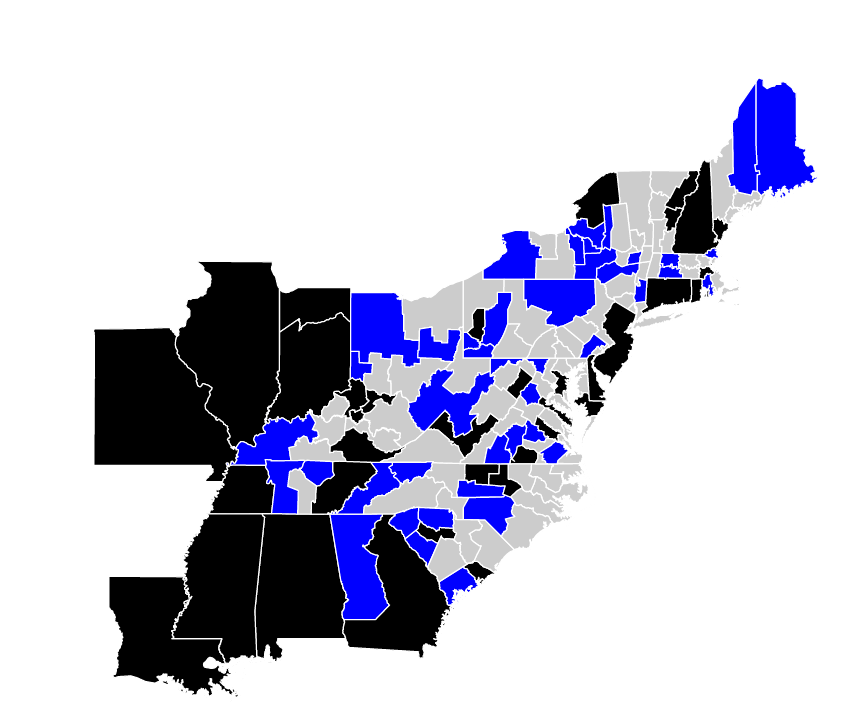

We've spent this sprint working on generating summative graphics that will show interesting features about Congress over spans of time. We settled on six main visualizations that we were excited about producing, that we think will show interesting results, and that we can produce with our data.
We've made varying levels of progress on these, and will talk in depth about the ones we've advanced furthest with.
Partisanship
The two measures we decided to track are partisanship between multiple parties, and within a single party (called "unification"). To find this, we looped through each session of congress and created a list, one element for each vote that took place in both the house and senate in that congress. The elements were a dictionary containing the name of a party and the number of people in that party who voted Yea and Nay on that bill. For example:
[{"Republican":[90,10], "Democrat":[5,95]}, ....]This example list shows that for the first vote in this session of Congress, 90 Republicans voted in favor and 10 voted against, whereas 5 Democrats voted in favor and 95 voted against. This list would contain all "major" parties present in that session of congress - a distinction we bestow if at least 5% of legislators belonged to that party.
From there, we we were able to create two measures for each session: party agreement and party unification. To compute party agreement, we calculated the "average" member of each party, who votes are the way the majority of their party voted in each vote. In the above example, the "average" Democrat voted Nay on the first vote.
We then compared the average party member from all parties on each vote, and counted the number of times the majority of parties agreed with each other on a vote. We say "majority of parties" because in older sessions, there were more than two parties at a time and we need a measure of agreement between them. We divide this count to get a single number: the percentage of bills in a session of congress that parties agreed upon.
The next measure is party unification, or how often the party is unified or divided. We considered a "unified" party to be 90% of party members voting the same way on a bill. We counted the number of times this happened per session, and divided by number of votes to get the percentage of votes on which a party was unified, which we consider a measure of partisanship.
We spent a lot of time trying to visualize this data. For example, here is a screenshot of a d3 area plot that shows party unification over time: 
However, we were dissatisifed with this representation - it's jumbled, spiky, and hard to read, and doesn't immediately present a picture about party unification. We want to show that partisanship is increasing but a lot of the spikes in this graph don't display that easily.
A simple line plot shows some interesting information: 
This gets closer at what we want to show. It just has Democrats and Republicans (which is okay - that's what most people today know and care about) and shows how as party unification has increased over the part 40ish years, the party agreement has dropped way down. This gets towards our persuasive point about partisanship.
However, this graph is ugly. It's hard to look at and its spikes make it seem more like a stock market diagram than something the average person wants to try to understand. It's a lot to take in at once and there's a lot of noise.
We spent a long time thinking about how we could display this information in a way that was informative and visually pleasing. After looking through the d3 library, we were inspired by this visualization of the Wealth and Health of Nations.
The visualization we're working on right now will follow it's method of using a draggable slider bar to show the year. Dragging the slider allows the user to see trends over time without being overwhelmed with all the information at once. Here's a screenshot of what the visualization will look like:
This is a representation of the most recent session of Congress, 113. Each circle is a party (blue for Democrats, red for Republicans) and the size of the circle indicates the number of legislators belonging to that party. The circle's fill is the party unification metric: here, it is 70% for Democrats and 71% for Republicans. And the overlap of the circles indicates the measure of agreement for that session: in 113, the parties agreed on 13% of bills.
This is obviously just the start of the visualization: it needs labels and other ways to show what it means. Additionally, we're in the process of implementing the draggable slider and animating changes between sessions of Congress.
Subjects
As we talked about in our first story, we had data that showed what subjects concerned each session of Congress. In total, we have 35 sessions of Congress with this data from GovTrack. Our goal with this visualization is to determine how responsive Congress is and by pairing it with the incumbency and partisanship visualizations, we can show the responsiveness of Congress as a factor of incumbency and partisanship.
So our first order of business is that in these 35 sessions of Congress, there are hundreds of subjects that bills within these sessions addressed. We needed a way to determine what was the most important subject to that session of Congress and one obvious way to do that would be to look at the subjects that appear the greatest amount of times among all of these sessions. Using this method, we found that the subject 'Government operations and politics' appears the greatest number of times, in over 12,000 bills. But this subject isn't meaningful to us and doesn't tell us what Congress cares that is relevant to that session.
So we instead decided to use tfidf, which is short for term frequency-inverse document frequency, and is a numerical statistic that would weight the subjects that appear most often only within a given session of Congress more heavily. This means that if in the 93rd Congress, there were a lot of bills concerning 'Medical care, personnel, and facilities' and this subject does not appear that often in the remaining 34 sessions of Congress, tfidf would give this subject a high score.
For those of you familiar with tfidf, we are basically treating each session of Congress as a massive document where the number of bills containing a subject is the number of times that subject appears in this document and performing our tfidf calculation on the corpus of all of these documents. You can just skip the following 3 paragraphs.
So we've found a method that might work. How did we implement it? We start with data for each session in our .csv files, as we discussed in our first story, that looks like this:
where each column is a subject and the rows are each bills with a 1 if that bill pertains to that subject and a 0 otherwise. For the tf part of tfidf we simply go through each session of Congress and for each subject in that session, count the number of bills that pertain to that subject.
Now for the idf part, we look at each subject and count how many times it appears in each session of Congress. We then take the log of our total number of sessions divided by the number of sessions the given subject appears in.
Now if we compute the product of our tf value and our idf value for each subject in each session of Congress, we can find the value with the highest score and consider that the most pertinent subject to that specific session of Congress.
But we're still not done. If we take our highest tfidf scorers and we plot the number of bills they appear in per session of Congress, we get this plot:
Now we have definitely been partially successful here. We can see that in 2005, which is the 109th Congress and the year that Hurricane Katrina devastated that the Gulf coast, hurricane aftermath legislation was the highest tfidf scorer. Bills relating to narcotic traffic began to rise in the 1980s and entered full swing in the 1990s as the war on drugs continued. However, looking at this plot, narcotic traffic is almost overshadowed by a subject like 'Congressional Reporting Requirements', which also doesn't tell us anything.
So what happened? If we look at 'Congressional Reporting Requirements', we see that it did not appear in any sessions of Congress before 1983 or after 2010 which means that, based off the way we calculate idf, its idf score wasn't low enough to reduce its tf score, which exceeds 1000 in 1995. This basically boils down to different subjects that are all used to self-reference our government being used over time.
We tried a variety of approaches like grouping sessions of Congress that use similar subjects (a quick example would be the 93rd to 98th Congresses, which contain 'Bill consideration (Rule)' as a subject) and then perform tfidf on those groups, which did not fix the problem. In the end, we chose to just eliminate all subjects that contain the following terms: 'Congress', 'Government', 'Bill', 'Advisory', and 'Executive'. We feel that removing these terms will not bias our data as all that we are doing is removing the subjects Congress uses to refer to itself and the government.
Now if we redo our analysis after removing these subjects, we get the plot below:
This is right now a static plot rendered using matplotlib and seaborn but we plan to make this fully interactive so that the user can see how many bills for a given subject appear in each Congress, which Congress contributed which subject with the corresponding highest tfidf score, and pinpoint historical moments that show the level of Congressional response, from Hurricane Katrina in 2005 to the war in Iraq in 2003.
Incumbency over time
To show incumbency over time, I used the data we gathered in the previous phase. This data included each member of congress and their corresponding state and/or district for each congressional session. I drew out possibilities for the visualization and settled on one in which the member of congress would be shown on the map of the US. This required me to download the district maps for each of the congressional sessions. The maps were in a GeoJSON format, which has a lot of redundancy, and also had a very high level of precision (everything was mapped to approximately the nearest 6 meters). I reduced this to the nearest 600 meters and converted it to a format that was much more useful for the web, called TopoJSON. This compressed more than 500 megabytes of map data to less than 50 megabytes! I was then able to link each of the districts from the map data to its corresponding member of congress. However, some of the districts had been moved and congress people resituated over time due to gerrymandering. I took this into account by linking each district to multiple congress people.
At this point, I am able to display the map of each of the congressional districts for each session of congress. However, the map lacks interactivity and there is no useful visual indication of each district's congressperson. In the screenshot of the 17th congressional districts (chosen arbitrarily) below, I blacked out districts where a representative in the house was not found or not linked properly. All the blue districts are those in which the first letter of the first name of the representative starts with a "J" — purely to determine whether my code was working or not.
{kind=link}
{kind=link}
{kind=link}
{kind=link}
{kind=link}
{kind=link}
{kind=link}
{kind=link}